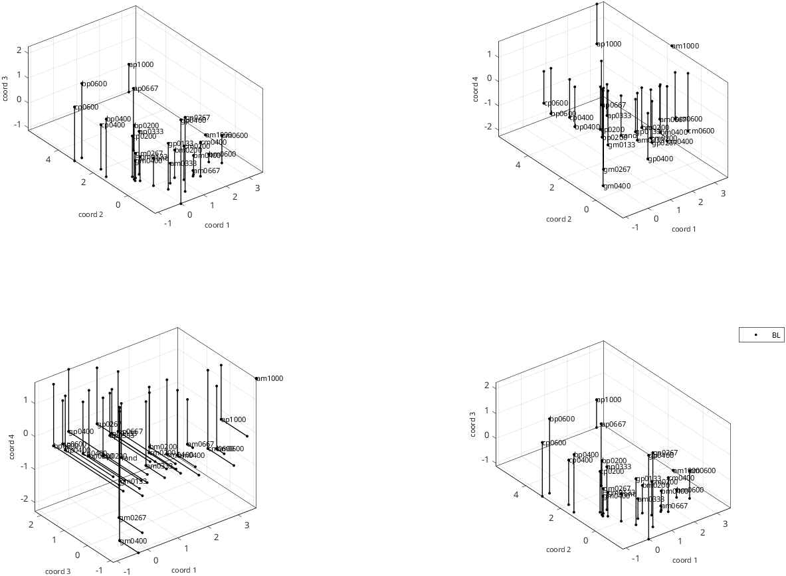
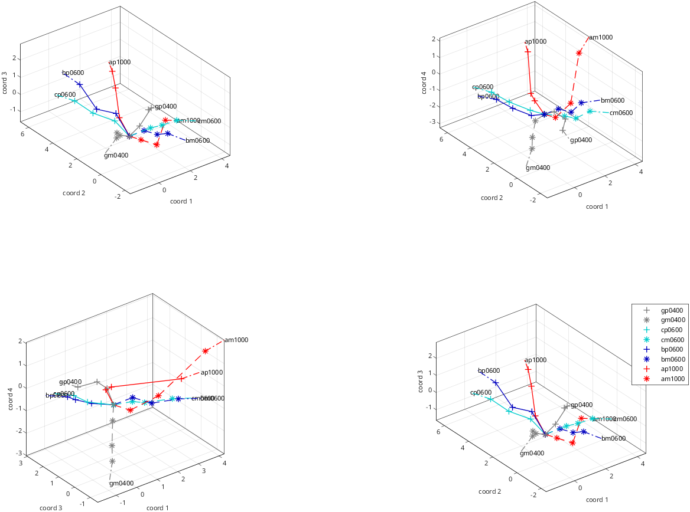
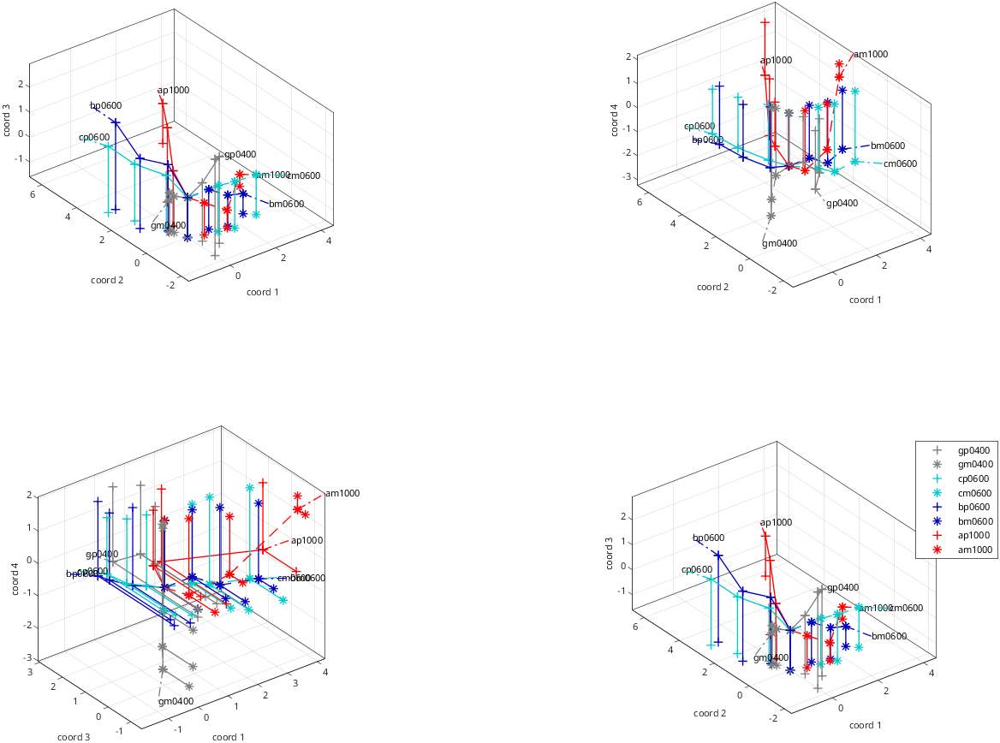
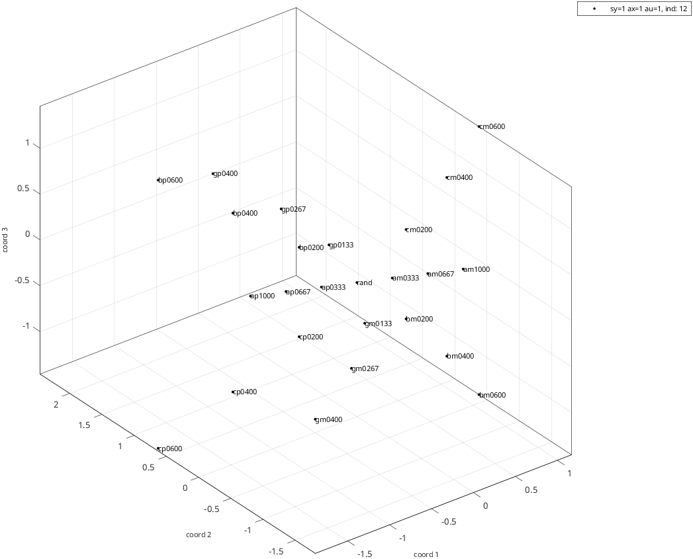
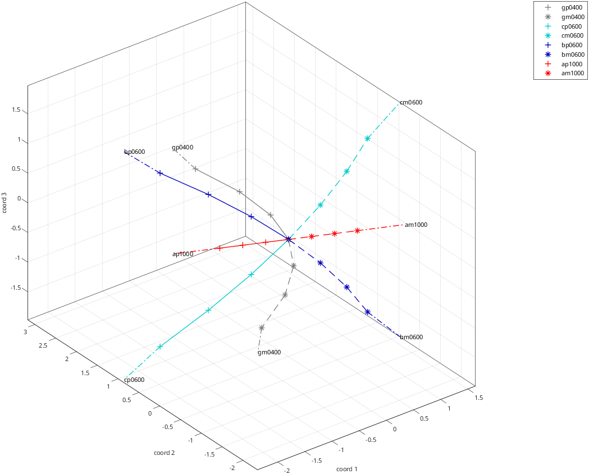
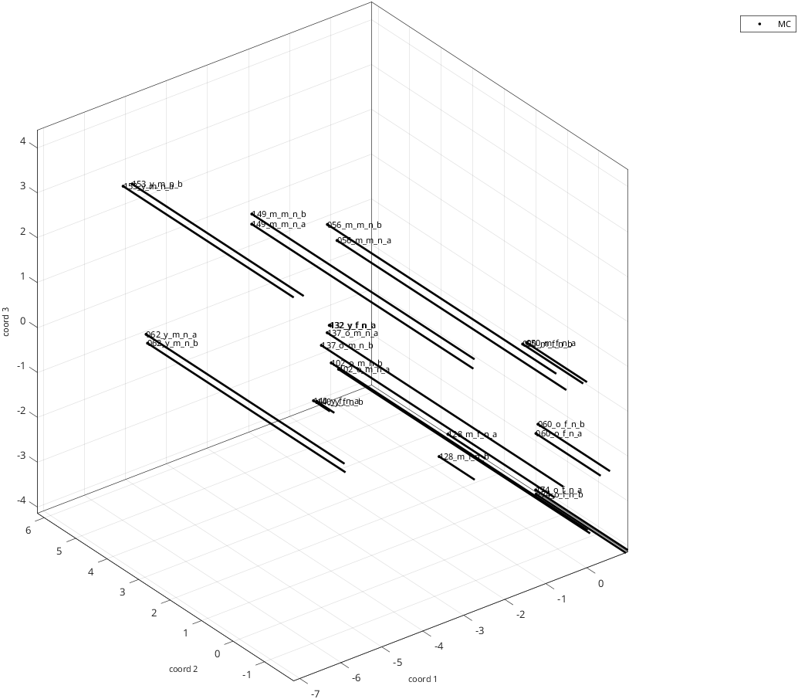
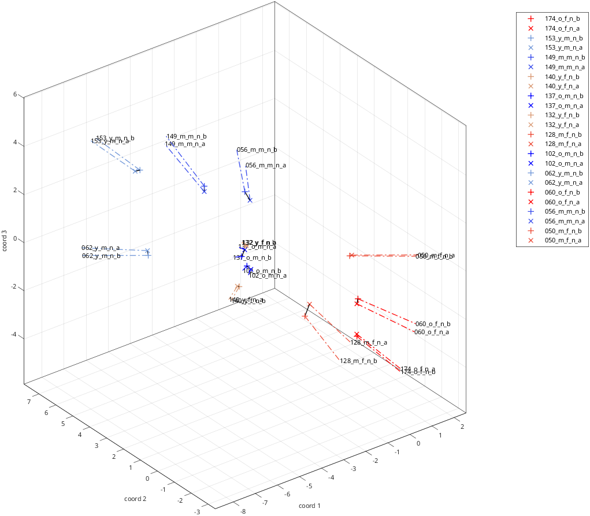
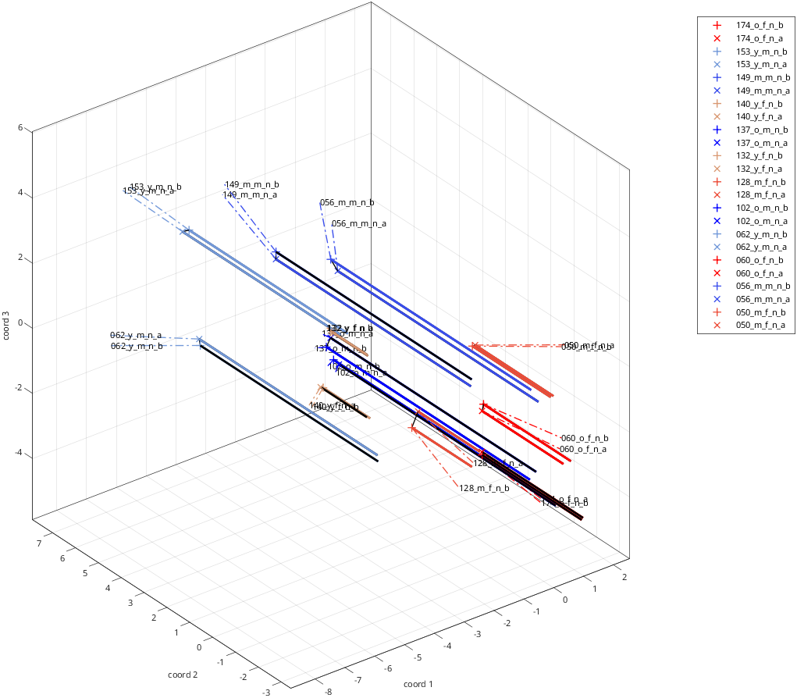

rs_disp_coordsets_demo
Simple display of coordinate sets
Workflow:
- data files are read -data are displayed
Plot options illustrated:
- custom labeling of datasets based on subject ID
- custom interpreter for stimuus labels and legend
- plotting dropped perpendiculars
- basic plots of rays
See also: rs_get_coordsets, rs_disp_coordsets, rs_disp_enh_coordsets
section to force btc defaults, even if rs_aux_defaults.mat has been created or modified
=struct;
={};
={}; %example 4: MPI faces dataset, Ebner, N. C., Riediger, M., & Lindenberger, U. (2010). FACES—A database of facial expressions in young, middle-aged, and older women and men: Development and validation. Behavior Research Methods, 42, 351-362. doi:10.3758/BRM.42.1.351
=;=;
=;
=;=;
=;
=;
=;
read the coordinates and metadata
[]=;
;
=data_read{iex}.sets{1}.subj_id;
opts_disp{iex}.set_labels=data_read{iex}.sets{1}.subj_id;plot
aux_out{iex}=; %create the plotenhanced plot
endOutput:
**************
example 1
entering set 1 of 1:
primary dataset 1 is experimental data
37 different stimulus types found in data file ./samples/animals/image_coords_S3
37 different stimulus types found in setup file [unused]
37 of 37 labels found
coordinate sets with 1 to 7 dimensions read.
datasets selected:
set 1: dim range [ 1 7] label: samples/animals/image_S3
##### rs_warning: cannot find stimulus coordinates, so cannot identify rays
type: 'data'
paradigm_type: 'animals'
paradigm_name: 'image'
subj_id: 'S3'
subj_id_short: 'S3'
extra: []
dim_list: [1 2 3 4 5 6 7]
nstims: 37
label_long: './samples/animals/image_coords_S3'
label: 'samples/animals/image_S3'
pipeline: [1x1 struct]
**************
example 2
entering set 1 of 1:
primary dataset 1 is experimental data
25 different stimulus types found in data file ./samples/bwtextures/bgca3pt_coords_BL_sess01_10
suggested ray permutation for bgca:
2 1 3 4
25 different stimulus types found in setup file ./samples/bwtextures/bgca3pt9.mat
25 of 25 labels found
coordinate sets with 1 to 7 dimensions read.
datasets selected:
set 1: dim range [ 1 7] label: samples/bwtextures/bgca3pt_BL_sess01_10
type: 'data'
paradigm_type: 'btc'
paradigm_name: 'bgca3pt'
subj_id: 'BL'
subj_id_short: 'BL'
extra: 'sess01_10'
dim_list: [1 2 3 4 5 6 7]
nstims: 25
label_long: './samples/bwtextures/bgca3pt_coords_BL_sess01_10'
label: 'samples/bwtextures/bgca3pt_BL_sess01_10'
pipeline: [1x1 struct]
**************
example 3
entering set 1 of 1:
primary dataset 1 is qform model
suggested ray permutation for bgca:
2 1 3 4
25 different stimulus types found in setup file ./samples/bwtextures/bgca3pt9.mat
model 12 (sy=1 ax=1 au=1) loaded from ./samples/bwtextures/btc_allraysfixedb_avg_100surrs_madj.mat
datasets selected:
set 1: dim range [ 1 10] label: samples/bwtextures/bgca3pt9 c:aug q:samples/bwtextures/avg_madj m:qform
type: 'qform'
paradigm_type: 'btc'
paradigm_name: []
subj_id: 'sy=1 ax=1 au=1, ind: 12'
subj_id_short: 'sy=1 ax=1 au=1'
extra: []
dim_list: [1 2 3 4 5 6 7 8 9 10]
nstims: 25
label_long: './samples/bwtextures/bgca3pt9.mat c:aug q:./samples/bwtextures/btc_allraysfixedb_avg_100surrs_madj.mat m:qform'
label: 'samples/bwtextures/bgca3pt9 c:aug q:samples/bwtextures/avg_madj m:qform'
pipeline: [1x1 struct]
**************
example 4
entering set 1 of 1:
primary dataset 1 is experimental data
24 different stimulus types found in data file ./samples/faces/faces_mpi_en2_fc_coords_MC_sess01_10
24 different stimulus types found in setup file ./samples/faces/faces_mpi_en2_fc.mat
24 of 24 labels found
coordinate sets with 1 to 7 dimensions read.
datasets selected:
set 1: dim range [ 1 7] label: samples/faces/faces_mpi_en2_fc_MC_sess01_10
type: 'data'
paradigm_type: 'faces'
paradigm_name: 'mpi_en2_fc'
subj_id: 'MC'
subj_id_short: 'MC'
extra: 'sess01_10'
dim_list: [1 2 3 4 5 6 7]
nstims: 24
label_long: './samples/faces/faces_mpi_en2_fc_coords_MC_sess01_10'
label: 'samples/faces/faces_mpi_en2_fc_MC_sess01_10'
pipeline: [1x1 struct]








